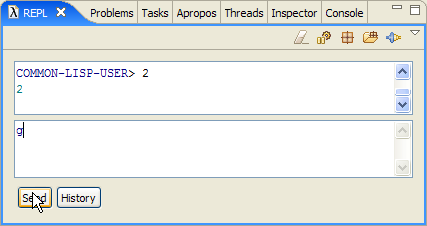
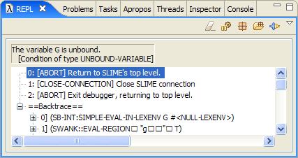
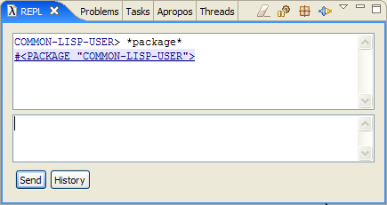
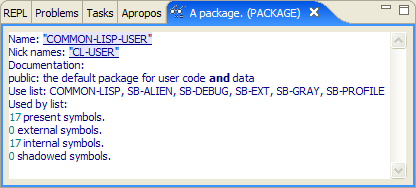
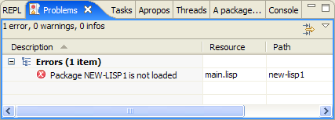
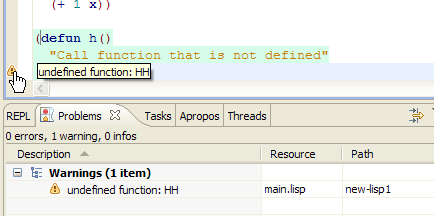

Debugging
If something goes wrong in your code, you get into debugger. For example, enter g in REPL:

Hitting send, opens debugger:

The debugger has three regions:At the top is the error message that describes why Lisp stopped the programThen debugger displays options to resolve the problem. The default option which aborts previous command is highlighted so if you satisfied with this default you can just hit Enter to go back to REPL (or press q). To choose any other option you can select it and hit Enter or press number that corresponds to the option.Backtrace shows what evaluations Lisp performed before it arrived to this error condition.
In this case the error happened because symbol g is not defined.
Inspector
Some regions of upper part of REPL are hyperlinks. These are objects that can be inspected. To inspect you just click on a hyperlink. For example, enter *package* in REPL:

and follow #<PACKAGE "COMMON-LISP-USER"> hyperlink. You'll get into Inspector:

which prints details of the object #<PACKAGE "COMMON-LISP-USER">.
Compilation Warnings and Errors
Add to main.lisp following code:
(defun h()
"Call function that is not defined"
(hh))
When you save the file, Cusp tries to send it for compilation. In this case saving generates item in Problems list:

It is generated because we tried to compile main.lisp before we loaded package new-lisp1.asd. See section "Quitting And Starting Again".
Now, if you load new-lisp1.asd compilation produces a warning, which is added to Problems tab and put on bar left to the code:

Back to table of contents